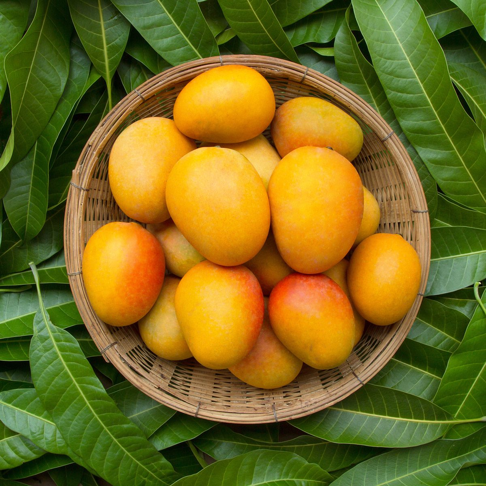

Frequently Asked Questions

More about Mangoes?
Mangoes are a beloved fruit known for their delicious taste and nutritional benefits. However, many people have questions about mangoes, from their origins and varieties to how to select, store, and enjoy them. Here are some frequently asked questions (FAQs) about mangoes:
Where do mangoes come from? Mangoes are believed to have originated in South Asia, particularly in India and Myanmar. They have a long history dating back over 4,000 years.
What are the different varieties of mangoes? There are over 1,000 different varieties of mangoes grown worldwide. Some popular varieties include Alphonso, Ataulfo (also known as Champagne or Honey mango), Keitt, and Tommy Atkins. Each variety has its unique flavor and characteristics.
How can I choose a ripe mango? When selecting a ripe mango, look for fruits that are slightly soft to the touch and have a fruity aroma at the stem end. The color and firmness may vary depending on the variety.
How do I store mangoes? If your mango is unripe, store it at room temperature until it ripens. Once ripe, you can prolong its freshness by storing it in the refrigerator for a few days. Keep unpeeled mangoes in a plastic bag to prevent them from drying out.
Are mangoes healthy? Yes, mangoes are highly nutritious. They are rich in vitamins (especially vitamin C and vitamin A), minerals, and antioxidants. Mangoes can support immune health, aid in digestion, and contribute to good skin health.
What is the best way to cut a mango? To cut a mango, first locate the flat, oblong seed in the center. Slice the mango along the sides of the seed, creating two large "cheeks." Then, score the flesh without cutting through the skin, creating a grid pattern. You can then scoop out the diced mango cubes with a spoon.
Can mangoes be frozen? Yes, mangoes can be frozen. To freeze mangoes, peel and dice the fruit, then place the pieces in an airtight container or bag. Frozen mangoes are great for smoothies and desserts.
What are some popular dishes and recipes featuring mangoes? Mangoes are incredibly versatile and can be used in various culinary creations. Some popular dishes include mango salsa, mango chutney, mango lassi (a yogurt-based drink), and mango sorbet. They can also be added to salads, desserts, and even savory dishes.
Are there any allergic reactions associated with mangoes? Some people may experience skin irritation when handling mangoes due to compounds in the skin. Additionally, a small percentage of individuals may have a cross-reactive allergy between mangoes and cashews or pistachios due to a shared chemical compound.
Mangoes are not only delicious but also a source of intriguing facts and culinary possibilities. Hopefully, these FAQs have provided you with valuable information about this remarkable fruit.